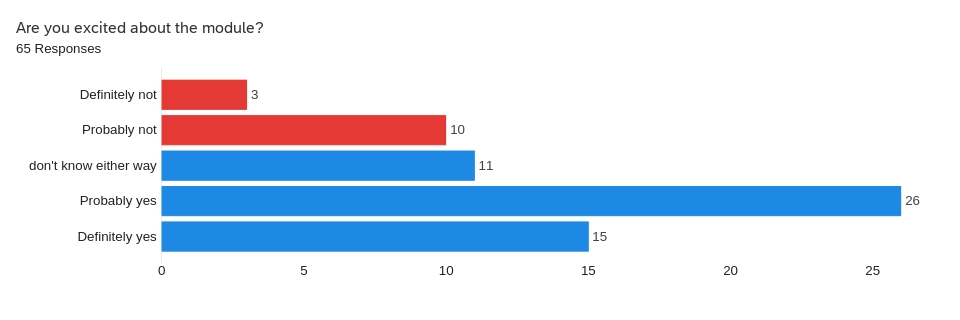
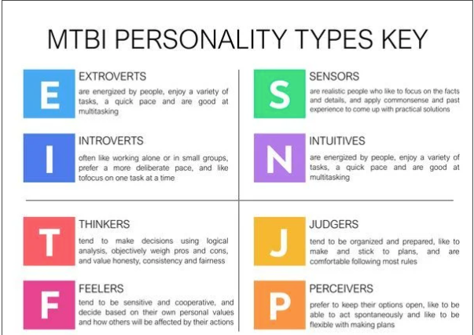
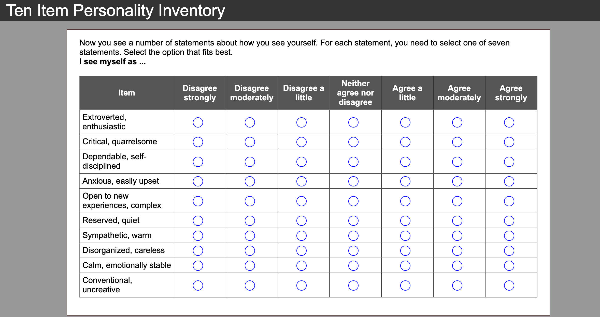

Lectures
Module Coordinator - Dr. Gordon Wright
Lectures
Below is a comprehensive list of lectures.
| Type | Week | Topic | Author | Date | |
|---|---|---|---|---|---|
| Deviously seeking deception | Welcome to the LittleMonkeyLab | Dr Gordon Wright | |||
| Induction Overview | |||||
| Lecture01 | Module Overview & What is Science? | Dr Gordon Wright | Monday, October 3, 2022 | ||
| Lecture02 | Asking good questions and gathering reliable evidence | Dr Gordon Wright | Monday, October 10, 2022 |  | |
| Lecture03 | Being critical and evaluating the work of others | Dr Gordon Wright | Monday, October 17, 2022 | ||
| Lecture04 | Research, me-search & Inclusivity | Dr Gordon Wright | Monday, October 24, 2022 | ||
| Lecture05 | The Open Science movement in Psychology | Dr Gordon Wright | Monday, October 31, 2022 |

|
|
| Lecture06 | Operationalising variables and bringing concepts to life | Dr Gordon Wright | Monday, November 14, 2022 | ||
| Lecture07 | How do we measure or assess psychological concepts and constructs? | Dr Gordon Wright | Monday, November 21, 2022 |  | |
| Lecture08 Psychometrics - LIVE! | I like to develop new measures (Strongly Agree - Strongly Disagree) | Dr Gordon Wright |  | ||
| Lecturexx | Content Pending | Dr Gordon Wright | Monday, January 31, 2022 | ||
| Lecturexx | Content Pending | Dr Gordon Wright | Monday, January 31, 2022 | ||
| Lecturexx | Content Pending | Dr Gordon Wright | Monday, January 31, 2022 | ||
| Lecturexx | Content Pending | Dr Gordon Wright | Monday, January 31, 2022 | ||
| Lecturexx | Content Pending | Dr Gordon Wright | Monday, January 31, 2022 | ||
| Lecturexx | Content Pending | Dr Gordon Wright | Monday, January 31, 2022 | ||
| Lecturexx | Content Pending | Dr Gordon Wright | Monday, January 31, 2022 | ||
| Lecturexx | Content Pending | Dr Gordon Wright | Monday, January 31, 2022 | ||
| Lecturexx | Content Pending | Dr Gordon Wright | Monday, January 31, 2022 | ||
| Lecturexx | Content Pending | Dr Gordon Wright | Monday, January 31, 2022 | ||
| Lecturexx | Content Pending | Dr Gordon Wright | Monday, January 31, 2022 | ||
| Lecturexx | Content Pending | Dr Gordon Wright | Monday, January 31, 2022 |
No matching items
Lecture 01 Powerpoint Lecture 01 PDF Lecture 01 Quarto-html Lecture 01 as .qmd